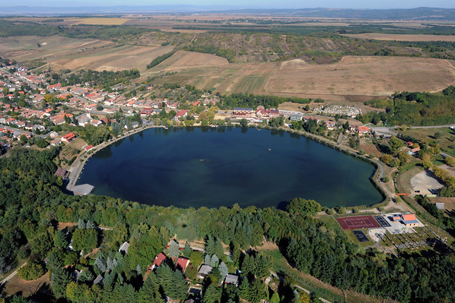

Kisebb nyaralótavak Magyarországon
Tiszafüredi Holt-Tisza
| Kialakulása: |
kimélyülés |
| Vízfelszín: |
7 hektár |
| Vízmélység: |
4-7 méter |
| Itt található: |
Bánk, Cserhát Nógrád megye |

A meglehetősen piciny, de különleges hangulatú tavat fenékforrások táplálják, a felesleges vizét pedig a Bánki-patak vezeti le. Így esőzés, felhőszakadás esetén sem árad meg, és nagy szárazság idején sem szárad ki.A mindössze 370 méter hosszú, és 240 méter széles tó egy rehabilitációnak köszönhetően fürdésre és horgászatra is alkalmas.
A szálloda melletti strand főidényben a nappali órákban fizetős, este és főidényen kívül szabadon látogatható. Aki az olcsóbb természetközeli szállásokat kedveli, az természetesen itt is talál egy jól kiépített kempinget, de magánszállások is elérhetőek a környéken. A vízi színpadon 2009 óta itt rendezik a Bánki-tó Fesztivált, melynek keretében zenei koncerteket, színi előadásokat, nyári hétvégeken pedig szabadtéri mozi vetítést tartanak.
Kapcsolódó linkek:
Bánkitó Fesztivál
Fesztivál beszámoló, 2016
Kirándulástippek